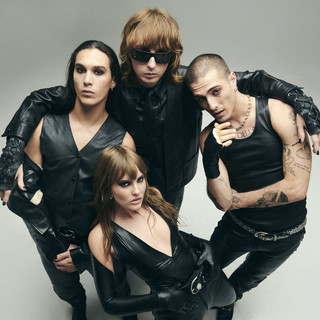

A nova música italiana
Maneskin
Formada da mesma forma que um clássico filme clichê, Victoria e Thomas fundaram a banda enquanto ainda estavam no colégio - Damiano pediu para entrar na banda pouco tempo depois, e Ethan se uniu ao grupo por meio de um anúncio no Facebook: "procura-se baterista para uma banda com vários covers e músicas autorais já arranjadas". O quarteto se reunia e tocava nas ruas e, de vez em quando, arriscavam postar alguns covers no canal do YouTube do Måneskin. Em 2017, se inscreveram para participar do The X-Factor e chegaram a ser finalistas do programa. Apesar de não terem oficialmente vencido, o público italiano os abraçou de uma forma muito calorosa e eles vêm batendo recordes desde então. Com "Zitti e Buoni", o Måneskin vence o Festival de Sanremo 2021 e o Eurovision Song Contest. A Itália não ganhava a competição desde 1990 e os efeitos foram claros: 'Zitti e Buoni' se transformou na música italiana mais ouvida de todos os tempos nas plataformas digitais. A música faz parte do álbum "Teatro D'Ira - Vol. I", que também carrega outros hits da banda. O sucesso do EP "Chosen", do álbum "Il Ballo della Vita" e os shows esgotados quase instantaneamente provam que os Måneskin sempre foram figuras muito bem recebidas onde quer que passassem pelo seu país. Após a vitória, o sucesso foi explosivo em todas as partes do mundo, e muitas pessoas foram "redescobrir" a discografia da banda, fazendo que músicas do primeiro EP (Chosen) se transformassem em Hits. É o caso do cover de "Beggin', apresentado pela banda em 2017 no The X-Factor. A faixa "I WANNA BE YOUR SLAVE", do Teatro D'Ira, também foi responsabilizada com o sucesso de 2021, mesmo tendo sido lançada meses antes.